Content from Working Practices
Last updated on 2024-11-12 | Edit this page
Estimated time: 10 minutes
Overview
Questions
- What does using git and GitHub look like in practice?
Objectives
- Describe a simple development flow using git and GitHub.
Good working practices help us avoid mistakes, keep our codebases secure, and help us write sustainable code. In this lesson we’ll look at what good practice using git and GitHub might look like.
The process to develop new code with git and GitHub looks like this:
- Open an Issue describing the feature or bug
- Create a branch to develop your changes on
- Make changes to your working copy
- Write tests
- Write documentation
- Open a Pull Request
- Review your changes
- Merge the Pull Request and close the Issue
- Tidy up your branches
Issues
GitHub Issues (tickets) are where you plan and track work. You can
assign individuals to Issues and label them with a relevant tag such as
bug or enhancement. Before opening a new Issue
check whether there is already one open for the feature or bug by using
GitHub’s search.
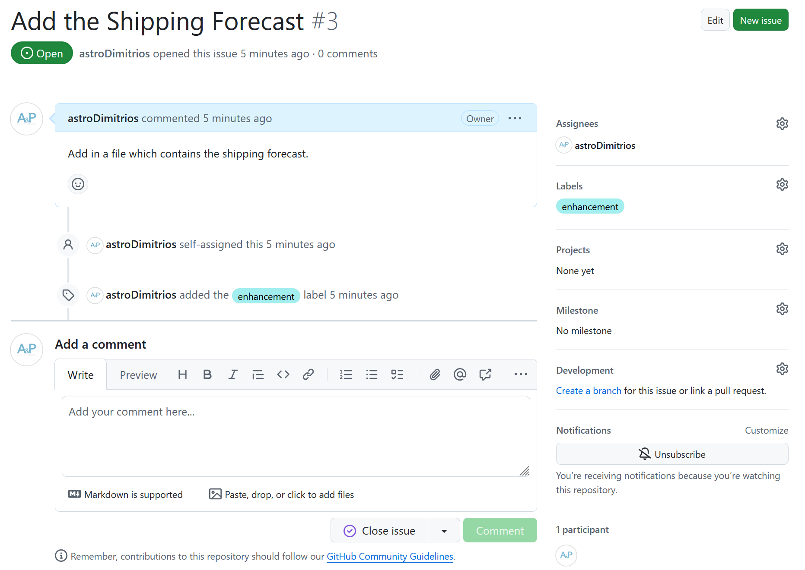
Creating an Issue
Practice opening up an Issue on your weather repository.
Your Issue will be a feature request for the shipping forecast.
Key Points
- Issues are used to track and plan work
Content from Branching Models
Last updated on 2024-11-12 | Edit this page
Estimated time: 10 minutes
Overview
Questions
- Which branching model is best for me?
Objectives
- Describe the Feature Branch and Forking models.
In the git-novice lesson you learnt how to develop features on a
branch and use a pull-request to merge the changes back into the
main branch. You were unknowingly using a Git branching
model called feature branch workflow.
As a reminder, we develop on branches to ensure that our development
code doesn’t affect the production code on the main branch.
Branches also allow your team to develop features in parallel.
A branching model (sometimes also called strategies or workflows) is the model your team adopts when writing, merging and deploying code when using a version control system. It is a set of rules that you must follow which outline how your team and collaborators interact with a shared codebase.
Having a clear model helps avoid merge conflicts, more on that later, and clearly sets out to new collaborators how they can contribute to your repository.
In this and the following episodes, we will outline some of the branching models that teams use in order to organize their work. We will look at their pros and cons and help decide which model you should choose based on your teams needs.
A branching model aims to:
- Enhance productivity by ensuring proper coordination among developers
- Enable parallel development
- Help organize a series of planned, structured releases
- Map a clear path when making changes from development through to production
- Maintain a bug-free code where developers can quickly fix issues and get these changes back to production without disrupting the development workflow
Git Branching Models
Some version control systems are more geared towards certain branching models. When using git you have a wide range of models to pick from. This means the first rule when collaborating using git is: “Talk about your branching model.”
A repositories CONTRIBUTING file may include details of
their branching model. This information might also be in a repositories
README file. If in doubt ask! You can also look at how
other people appear to be contributing to the repository.
Below are a few models:
Feature Branch
In this model every small change or “feature” gets its own branch
where the developers make changes. Once the feature is done, they submit
a pull request and merge it into the main branch after
review. Feature branches should be relatively short-lived.
Pros
- Each feature is developed away from
mainso you don’t affect production code - Multiple features can be developed in parallel feature branches
- It’s a simple model that’s easy for those new to git and your project
- Easy to set up with continuous integration testing and deployment
Cons
- If you don’t regularly merge changes to
maininto your feature branch it can become outdated, leading to merge conflicts - You may struggle if you need to maintain multiple production versions simultaneously in the same repository
The Feature Branch model is sometimes called GitHub Flow.
---
config:
gitGraph:
showCommitLabel: false
---
gitGraph
accDescr {A git graph showing four branches including the default
<code>main</code> branch.
Each circle is a commit.
A circle with an outline but no fill colour is a merge commit
where one branch has been merged into another.
The two feature branches and the <code>bug_fix</code> branch
all branch off of <code>main</code> at the same commit.
The <code>bug_fix</code> and <code>small_feature</code> branches
are merged back into <code>main</code> after
being developed on their branches.
The <code>large_feature</code> branch merges in the
changes to <code>main</code> to fix any conflicts
before the feature is ready to be merged
back into the <code>main</code> branch via a pull request.}
commit
branch bug_fix
checkout main
branch small_feature
checkout main
branch large_feature
checkout bug_fix
commit
checkout large_feature
commit
checkout main
merge bug_fix
checkout small_feature
commit
checkout large_feature
commit
checkout small_feature
commit
checkout main
merge small_feature
checkout large_feature
commit
merge main
checkout main
merge large_featureForking
In this model you make a fork (copy) of the whole repository you want to contribute to on GitHub in your personal space. You develop your changes using this fork. When a change is ready you open a pull request to contribute the changes back to the original repository.
Git Flow
In this model the main development occurs in a develop
branch. Feature branches are created from this develop
branch. When the develop branch is ready for a release, you
create a release branch which is then tested and merged
onto the develop and main branches.
Cons
- Very steep learning curve, not suitable for novices
gitGraph
accDescr {A git graph showing the GitFlow model.}
commit tag:"0.1"
branch hotfix
checkout main
branch release
branch develop
checkout hotfix
commit
checkout develop
commit
branch small_feature
checkout develop
merge hotfix
branch large_feature
checkout small_feature
commit
checkout large_feature
commit
commit
checkout main
merge hotfix tag:"0.2"
checkout small_feature
commit
checkout develop
merge small_feature
checkout release
merge develop
checkout large_feature
commit
checkout release
commit
commit
checkout main
merge release tag:"1.0"
checkout develop
merge releaseRecommendations
For small projects using a Feature Branch model is normally sufficient. If your team is large, or you expect external collaborators to contribute then we recommend developing using forks. Most open source projects require you to submit new code using a fork. The next few episodes will guide you through examples of both models.
This wasn’t an exhaustive list of branching models! You can find more information using the links below:
- From Novice to Pro: Understanding Git Branching Strategies, GitProtect
- What is a Git workflow?, GitLab
Key Points
- A clearly communicated branching model helps developers
- For small projects use the Feature Branch flow
- For larger projects or those with external collaborators use forks with feature branches
Content from Feature Branch Model
Last updated on 2024-11-14 | Edit this page
Estimated time: 45 minutes
Overview
Questions
- How can I use version control to collaborate with other people?
Objectives
- Use the feature branch model to collaborate.
- Clone a remote repository.
In this episode we will use the Feature Branch model to contribute to each others repositories.
You will need to get into pairs. One person will be the “Owner” and the other will be the “Collaborator”. The goal is for the Collaborator to add changes into the Owner’s repository. We will switch roles at the end, so both persons will play Owner and Collaborator.
While working together be sure to share what you are doing with your partner.
Practicing By Yourself
If you’re working through this lesson on your own, you can carry on by opening a second terminal window. This window will represent your partner, working on another computer. You won’t need to give anyone access on GitHub, because both ‘partners’ are you.
Repository Access
The Owner needs to give the Collaborator access. In your repository page on GitHub, click the “Settings” button on the right, select “Collaborators”, click “Add people”, and then enter your partner’s username.

To accept access to the Owner’s repo, the Collaborator needs to go to https://github.com/notifications or check for an email notification. Once there they can accept access to the Owner’s repo.
Cloning a Repo
Next, the Collaborator needs to download a copy of the Owner’s repository to their machine. This is called “cloning a repo”.
The Collaborator doesn’t want to overwrite their own version of
climate, so needs to clone the Owner’s repository to a
different location than their own repository with the same name.
To clone the Owner’s repo into their Desktop folder, the
Collaborator enters:
Replace ‘mo-eormerod’ with the Owner’s username.
If you choose to clone without the clone path
(~/Desktop/mo-eormerod-weather) specified at the end, you
will clone inside your own weather folder! Make sure to navigate to the
Desktop folder first.
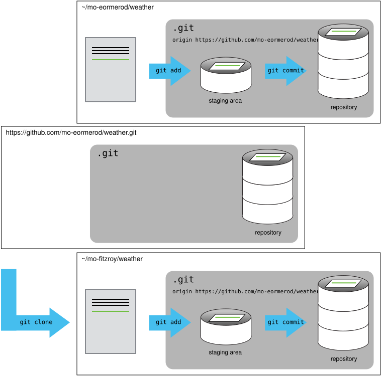
Feature Branches
The Collaborator can now make a change in their clone of the Owner’s repository. We will use a feature branch in the same way as we’ve been doing before:
OUTPUT
Switched to branch '3_shipping-forecast'Notice the name of the branch is prefixed by the number
3. This is the Issue number of the Issue the Owner created
on their repository. Your team may choose a different naming convention
such as prefixing the branch name by feature,
bug etc.
OUTPUT
New high expected Dover 1028 by 0600 tomorrow.
Low Trafalgar 1013 losing its identityOUTPUT
[3_shipping-forecast 17a1454] Add in the shipping forecast
1 file changed, 2 insertions(+)
create mode 100644 shipping-forecast.mdThen push the change to the Owner’s repository on GitHub:
OUTPUT
Enumerating objects: 4, done.
Counting objects: 100% (4/4), done.
Delta compression using up to 4 threads
Compressing objects: 100% (3/3), done.
Writing objects: 100% (3/3), 382 bytes | 191.00 KiB/s, done.
Total 3 (delta 1), reused 0 (delta 0), pack-reused 0
remote: Resolving deltas: 100% (1/1), completed with 1 local object.
remote:
remote: Create a pull request for '3_shipping-forecast' on GitHub by visiting:
remote: https://github.com/mo-eormerod/weather/pull/new/3_shipping-forecast
remote:
To github.com:mo-eormerod/weather.git
* [new branch] 3_shipping-forecast -> 3_shipping-forecast
branch '3_shipping-forecast' set up to track 'origin/3_shipping-forecast'.Note that we didn’t have to create a remote called
origin: Git uses this name by default when we clone a
repository. (This is why origin was a sensible choice
earlier when we were setting up remotes by hand.)
Take a look at the Owner’s repository on GitHub again, and you should
be able to see the 3_shipping-forecast branch and this new
commit made by the Collaborator. You may need to refresh your browser to
see the new commit.
In this episode and the previous one, our local repository has had a
single “remote”, called origin. A remote is a copy of the
repository that is hosted somewhere else, that we can push to and pull
from, and there’s no reason that you have to work with only one. For
example, on some large projects you might have your own copy in your own
GitHub account (you’d probably call this origin) and also
the main “upstream” project repository (let’s call this
upstream for the sake of examples). You would pull from
upstream from time to time to get the latest updates that
other people have committed.
Remember that the name you give to a remote only exists locally. It’s
an alias that you choose - whether origin, or
upstream, or mo-eormerod - and not something
intrinsic to the remote repository.
The git remote family of commands is used to set up and
alter the remotes associated with a repository. Here are some of the
most useful ones:
-
git remote -vlists all the remotes that are configured (we already used this in the last episode) -
git remote add [name] [url]is used to add a new remote -
git remote remove [name]removes a remote. Note that it doesn’t affect the remote repository at all - it just removes the link to it from the local repo. -
git remote set-url [name] [newurl]changes the URL that is associated with the remote. This is useful if it has moved, e.g. to a different GitHub account, or from GitHub to a different hosting service. Or, if we made a typo when adding it! -
git remote rename [oldname] [newname]changes the local alias by which a remote is known - its name. For example, one could use this to changeupstreamtomo-eormerod.
Open a PR
In the git-novice lesson you practised opening a pull request.
You should see a notification appear on GitHub telling you the
3_shipping-forecast branch had recent pushes. The
Collaborator should click on the green Compare & pull
request button to open the PR.
If you don’t see this notification click on the branches dropdown ,
the button showing main, and click on the
3_shipping-forecast branch.
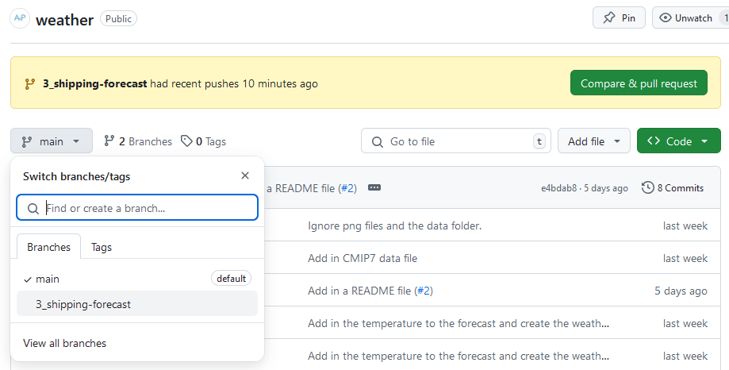
You should now see the Code view for the
3_shipping-forecast branch and a
Contribute button. Click on the
Contribute button and select the green Open
pull request option.
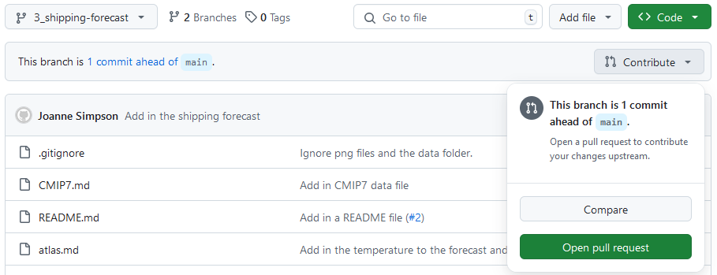
You may have noticed when running git push on the
3_shipping-forecast branch for the first time the output
contained:
OUTPUT
remote: Create a pull request for '3_shipping-forecast' on GitHub by visiting:
remote: https://github.com/mo-eormerod/weather/pull/new/3_shipping-forecastYou could have also followed this link to create a new PR. We
recommend you always open a draft PR after your first
push. This gives you access to a diff of your changes against the target
branch (usually main). When the changes are ready for
review you can mark the PR as Ready for review.
Automatically closing Issues via PRs
This PR adds in the shipping forecast which we have an open Issue
for. A PR can automatically close an Issue when it is merged into
main. To use this GitHub functionality add:
To the first comment of the PR, change 3 to the Issue
number of the Issue the Owner created on their repository. The GitHub
Documentation has more information on linking PRs to Issues.
In the next episode we will look at how these changes are reviewed
and merged back into main in more detail.
Key Points
- Add collaborators to your repo by going to the repository Settings then the Collaborators tab.
- Cloning a repo gives you a local copy of the repository:
git clone <repository> <directory> - Automatically close Issues when a PR is merged by adding a
Closes #<Issue number>line to the first comment in the PR.
Content from Review
Last updated on 2024-11-14 | Edit this page
Estimated time: 40 minutes
Overview
Questions
- How do I see a diff of the changes?
- How can I make inline comments or suggested changes?
Objectives
- Review changes made by collaborators.
- Respond to a review.
In this section we will explore how to properly review code and
suggest changes if necessary. We will continue to work in pairs. The
Owner should navigate back to their own weather repository.
You should see an open PR from your Collaborator.
Reviewing Changes
As the Owner make sure you are on the PR your Collaborator has opened on your repository.
You can add general science and code review comments in the Conversation tab. To review specific files go to the Files changed tab:
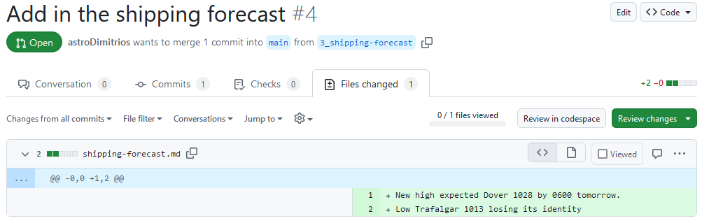
This tab shows a diff (difference) between your feature branch,
3_shipping-forecast, and the target branch,
main. Your diff might look different, to swap between
Unified and Split
view click on the cog dropdown:
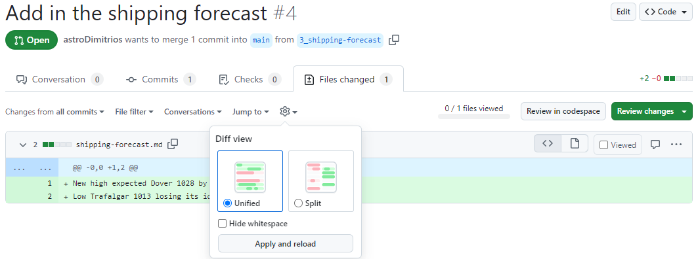
The default view shows a diff of the source code. We’ll stick with source code diffs for this lesson but you can change the view to rich diffs to display rendered changes to Markdown or Jupyter Notebook files. Click on the file icon on the far right of a diff for the file to swap to a rich diff:
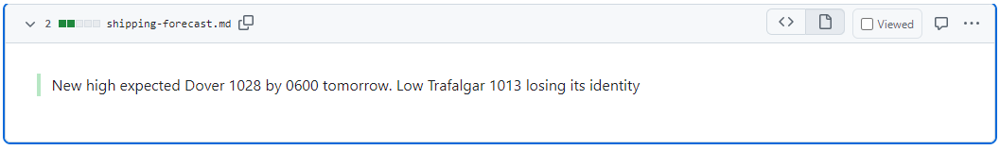
To start a review you can click on the green Review changes button:
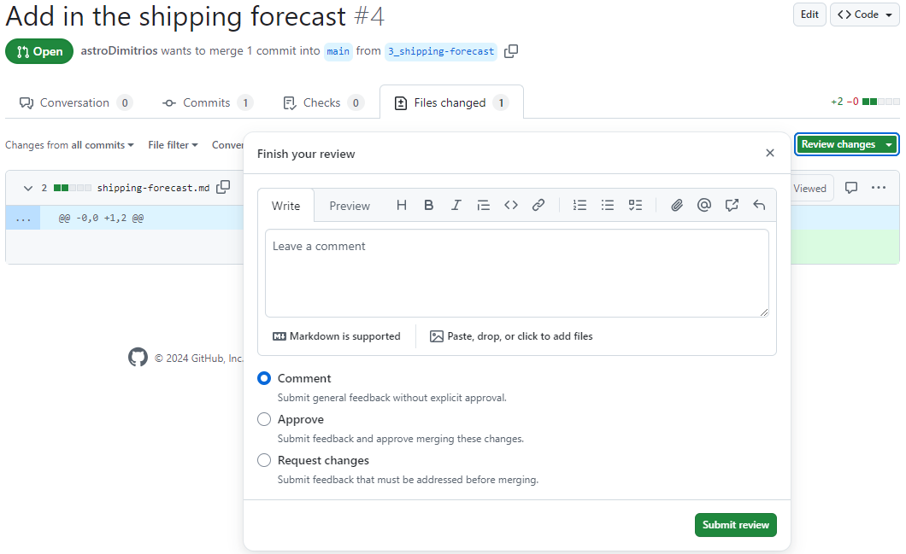
Normally it is useful to review each file one at a time and make comments inline first before adding general comments. Close the review popup and hover next to a line number until it becomes highlighted. Click on the line to add an inline comment:
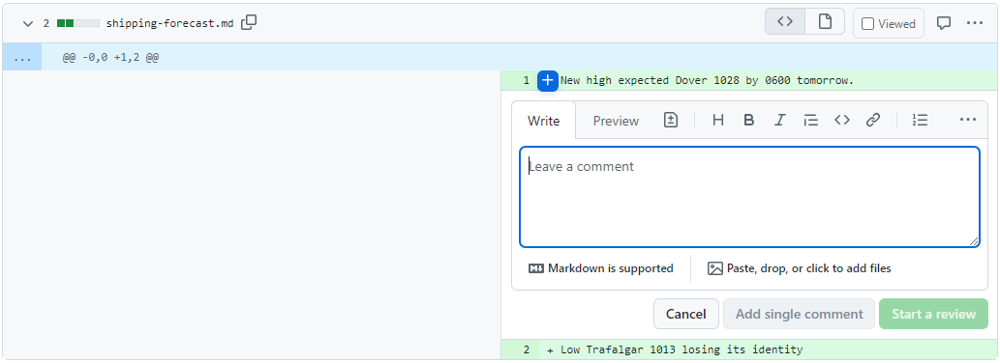
You can make suggested changes using inline comments. Click on the file icon or press Ctrl+g:
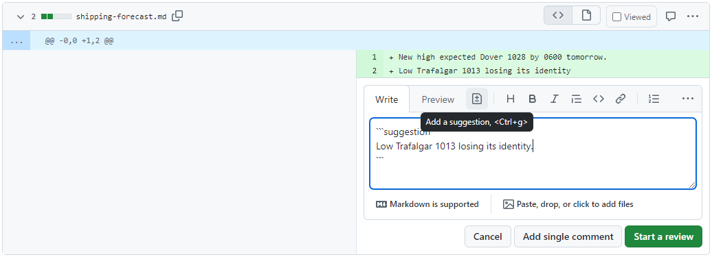
Now click on the green Finish your review button, add a comment, and select Request changes. When you’re finished click the green Submit review button.
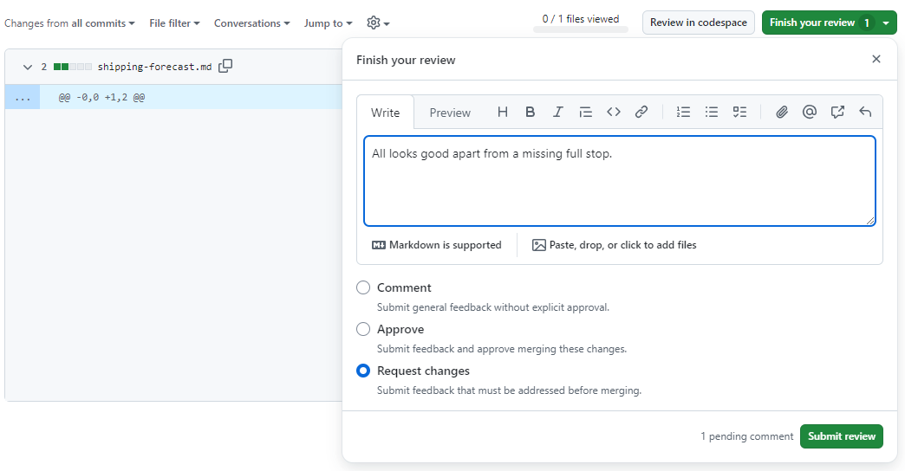
The PRs Conversation tab now looks like this:
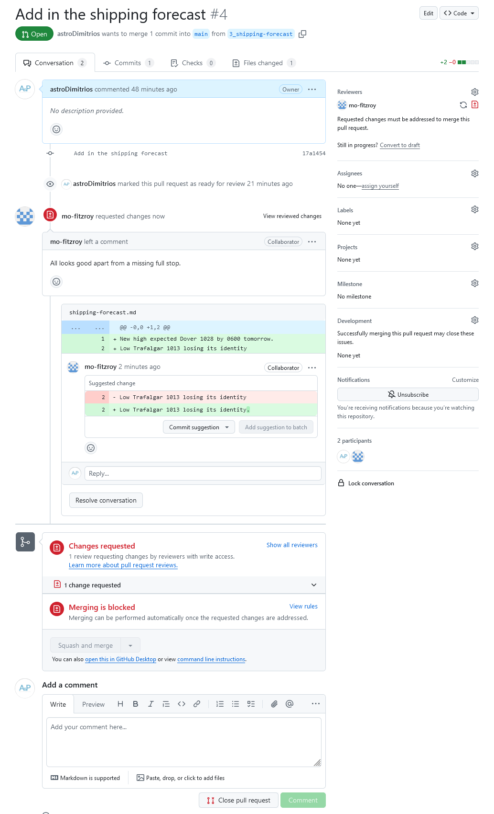
Responding to Review
Now it is the Collaborators turn to respond to the review.
You can see merging is blocked because our reviewer has requested changes. You also have the option to commit the suggested change to your branch directly via the PR. Click on the Commit suggestion button. In the popup add a description then click on Commit changes:
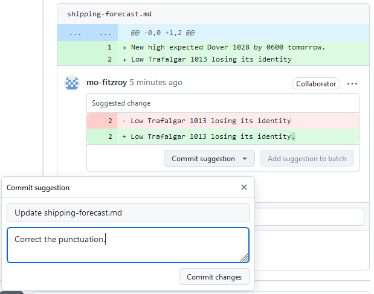
You could have also committed the change to your feature branch using your local copy and then marked the conversation with the suggested change as resolved.
Approving Changes
Now the Owner can respond to the Collaborators final changes.
The Conversation tab should update to show the suggestion as Outdated because it has been resolved by the Collaborator. It also gives you the option to view the new changes since your last review.
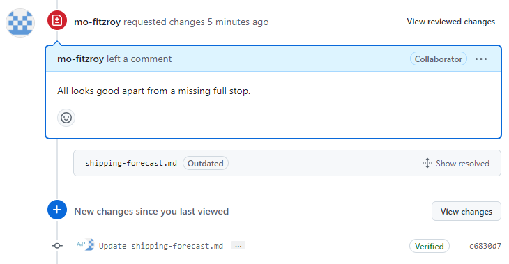
Click on the View changes button. If you are happy that the Collaborator has addressed your requested changes then you can approve the PR:
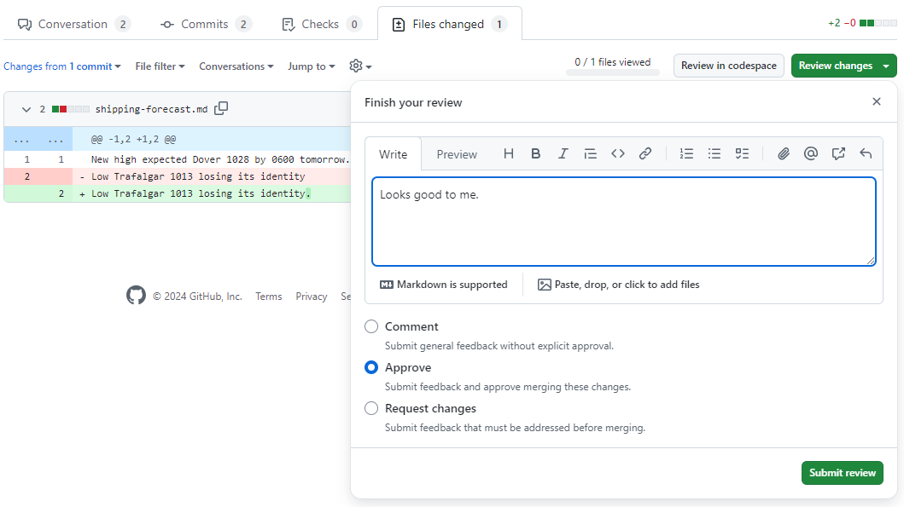
Swap back to the Conversations tab. The PR is now ready to merge and
has no conflicts with the base (main in this case) branch.
Click Squash and merge:
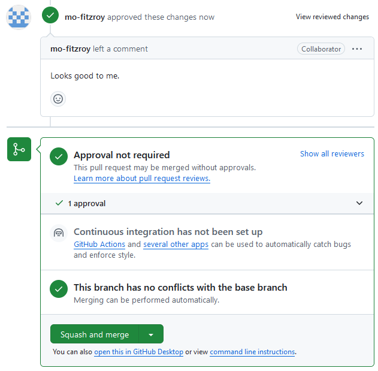
When your PR is merged the Conversations tab will show:
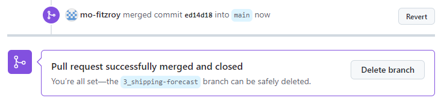
You can now delete the branch from GitHub by pressing the Delete branch button. Some repositories will be automatically set up to delete the feature branch after a PR is successfully merged.
If you head back to the main page of your repository, the code view
shows our new file shipping-forecast.md. The commit message
for the PR merge is shown next to it. If you hover over the PR number
(in this case #4) a popup will appear with details of the
merged PR. Click on the number to take you to the closed PR.
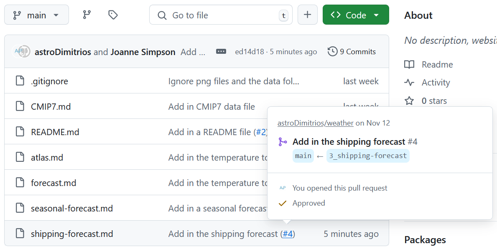
Head over to the repositories Issues tab. Check that your Issue for adding the shipping forecast was closed when you merged the PR.
Local Cleanup
In the git-novice lesson you learnt how to pull changes and clean up your branches after merging a PR.
The Collaborator can now:
- Update their local copy of the
weatherrepository - Delete any branches that are no longer necessary
The Owner can now:
- Update their local copy of the
weatherrepository
- Update your local copy of the
weatherrepository
OUTPUT
remote: Enumerating objects: 4, done.
remote: Counting objects: 100% (4/4), done.
remote: Compressing objects: 100% (3/3), done.
remote: Total 3 (delta 1), reused 0 (delta 0), pack-reused 0 (from 0)
Unpacking objects: 100% (3/3), 1.11 KiB | 87.00 KiB/s, done.
From github.com:mo-eormerod/weather
e4bdab8..ed14d18 main -> origin/main
Updating e4bdab8..ed14d18
Fast-forward
shipping-forecast.md | 2 ++
1 file changed, 2 insertions(+)
create mode 100644 shipping-forecast.md- Delete any branches that are no longer necessary
OUTPUT
Pruning origin
URL: git@github.com:mo-eormerod/weather.git
* [pruned] origin/3_shipping-forecastOUTPUT
Deleted branch 3_shipping-forecast (was 17a1454).Key Points
- A Pull Request (PR) is where your code and science review takes place.
- General review comments go in the PR Conversations tab.
- View a diff of the changes in the PR Files changed tab.
- Make inline comments or suggested changes in the Files changed tab using the diff.
Content from Break
Last updated on 2024-11-12 | Edit this page
Estimated time: 0 minutes
You’ve now used the Feature Branch model to:
- Open an Issue describing the feature or bug
- Give collaborators access to your repo
- Clone another repository
- Create a branch to develop your changes on
- Make changes to your working copy
- Open a Pull Request
- Review changes
- Respond to review
- Merge the Pull Request and close the Issue
- Tidy up your branches
Take a break - get up and move about.
Content from End
Last updated on 2024-11-11 | Edit this page
Estimated time: 0 minutes
This marks the end of the the workshop. Please remember to fill out your post-workshop feedback. This feedback is vital for us to keep improving the lesson for other learners.